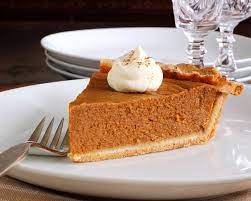

The Pumpking Pie

Recepie Description
This is a recepie for the king of all pumpkin pies. Its full of flavor and is very simple and easy to make, you just have to follow the steps down below!
Nutritional info (per serving)
- 379 calories
- protein 5.9 grams
- carbohydrates 30.5 grams
- fat 14.3 grams
- cholesterol 64 miligrams
- sodium 352.1 miligram
Ingredients
- 1 (15 ounce) can pumpkin
- 1 (14 ounce) can sweetened Condensed Milk
- 2 large eggs
- 1 teaspoon ground cinnamon
- ½ teaspoon ground ginger
- ½ teaspoon ground nutmeg
- ½ teaspoon salt
- 1 (9 inch) unbaked pie crust
Steps
- Preheat the oven 425 degrees Fahrenheit (220 degrees celsuis)
- Whisk pumpkin, sweetened condensed milk, eggs, spices and salt in medium bowl until smooth then pour it into the crust.
- Bake for 15 minutes, then reduce the oven temperature to 350 degrees Fahrenheit (175 degrees celsuis)
- Continue baking for approximately 35 to 40 minutes nad pull it out of the oven